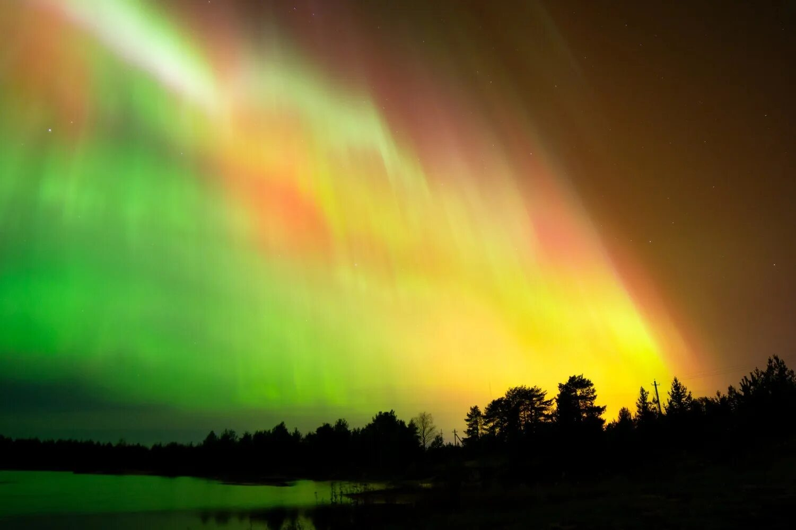

Северное сияние (полярное сияние)
1. Как выглядит
На ночном небе появляются светящиеся полосы, пятна или занавеси. Они переливаются зеленоватым, розовым, красным, фиолетовым и голубым цветом. Свечение движется — полосы колышутся, изгибаются, расходятся лучами, гаснут и вспыхивают снова. Самая частая форма — широкая дуга от горизонта до горизонта или мерцающий занавес, похожий на огромную штору на ветру. Иногда сияние принимает вид спирали или коронки прямо над головой. Длится от нескольких минут до нескольких часов.
2. История обнаружения и наблюдений
Древние люди боялись северного сияния и считали его плохим знаком. Первые научные описания оставили Аристотель и Плиний Старший. В XVIII веке русский учёный Михаил Ломоносов предположил, что сияние имеет электрическую природу. Он провёл опыты с электрическим разрядом в стеклянном шаре и получил свечение, похожее на полярное. В 1902 году норвежский физик Кристиан Биркеланд в опытах с намагниченной сферой (моделью Земли) показал, что частицы от Солнца направляются к полюсам магнитным полем. Сейчас сияние наблюдают с Земли, с самолётов и из космоса.
3. Природа явления
Солнце выбрасывает в космос поток заряженных частиц — солнечный ветер. Эти частицы долетают до Земли за 1–3 дня и захватываются магнитным полем планеты. Магнитное поле направляет их к Северному и Южному полюсам. В верхних слоях атмосферы (на высоте 100–300 километров) частицы сталкиваются с молекулами газов. Азот и кислород начинают светиться подобно люминесцентной лампе. Цвет зависит от газа и высоты: зелёный даёт кислород, красный и фиолетовый — азот.
4. Связь с культурой и мифами
Скандинавы верили, что северное сияние — это отблеск щитов и доспехов валькирий (воительниц, сопровождавших павших героев в Вальгаллу). У эскимосов было поверье, что это души умерших играют в мяч головой моржа. В финском эпосе сияние называли «ревонтули» — огненная лиса; считалось, что это лиса бежит по снегу, и искры от её хвоста взлетают в небо. Индейцы Северной Америки думали, что это огни гигантских котлов, в которых варят воинов. В Средние века в Европе полярное сияние считали предвестником войны, мора или смерти короля.
5. Условия для наблюдения
Лучше всего видно за полярным кругом: в Норвегии, Швеции, Финляндии, Исландии, на севере России, в Канаде и на Аляске. В сильные бури сияние спускается до широт Москвы, Санкт-Петербурга и даже северных штатов США. Главные условия: тёмное небо (без городского света), ясная погода (без облаков) и высокая солнечная активность. Лучший сезон — с сентября по март, когда ночи длинные и тёмные. Время — с 22 часов до 2 часов ночи. Смотреть нужно на северную сторону горизонта. Оптика не требуется, но широкий обзор без деревьев и домов нужен. Прогнозы магнитных бурь публикуют в интернете.
6. Редкость и периодичность
Северное сияние связано с 11-летним циклом солнечной активности. На пике цикла (солнечный максимум) сияния случаются часто — несколько раз в неделю в приполярных областях и несколько раз в месяц в средних широтах. В минимуме активности сияния редки. Сильные бури, при которых сияние видно над Москвой или Берлином, случаются раз в несколько лет. На самом Северном полюсе сияние можно наблюдать почти каждую ясную ночь. Успех наблюдения сильно зависит от погоды. Некоторые люди едут в Лапландию специально и ждут сияния несколько дней подряд. Вблизи Южного полюса существует точно такое же явление — южное сияние, но там почти нет зрителей.
